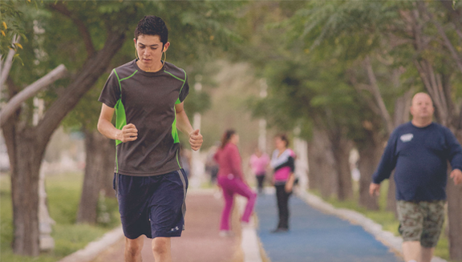

       <div class="pages navbar-through">
          <!-- Page, data-page contains page name-->
          <div data-page="corredor" class="page ">
            <!-- Scrollable page content-->
            <div class="page-content">
                <div class="cover-preview row">
                    
                </div>
                <div id="gcgpage-content" class="col-xs-12">
                    <h3 id="titulo-entrada">CORREDOR DEL PERIFÉRICO</h3>
                    <div class="resumen-page">
                  El mejoramiento del camellón central en el periférico abarca prácticamente desde los límites de Gómez Palacio hasta el sector Bugambilias, en...
                    </div>
                    
                     
                    <div id="gcg-contenido">
                        <p>El mejoramiento del camellón central en el periférico abarca prácticamente desde los límites de Gómez Palacio hasta el sector Bugambilias, en una primera etapa, con lo que se busca dar más seguridad a los ciclistas y corredores.</p>
                    <p>Parte de este proyecto contempla la construcción de una pista para correr que se compone de arcilla, así como en el concreto permeable en una pista para bicicletas y fuentes en diferentes puntos de la vía que vendrán a complementar la obra, además de la cordonería y la electrificación del espacio.</p>
                     <div class="row">
                           
                       </div>
                     <p>Pasto en rollo y más de 200 árboles serán plantados en esta área, como parte de las labores de reforestación que se consideran dentro del programa Reforestando La  Laguna, aunque la meta es establecer 400 árboles.</p>
                     <p>En esta vía está concentrado el 90 por ciento del tránsito vehicular de la zona metropolitana, junto con el bulevar Miguel Alemán, por lo que se les tiene que poner un especial interés y cambiar el rostro de ambas vías, puesto que son los más representativos del municipio.</p>
                     
                    
                       
                        <div class="row">
                           
                       </div>
                     
                       
                      
                        
                    </div>
                    <footer class="share-page">
                        <span class="lblShare">Compartir:</span>
                        <ul>
                           <a href="#" id="shareMail"><li></li></a>
                           <a href="#" id="shareFB"><li></li></a>
                           <a href="#" id="shareTwitter"><li></li></a>
                           <a href="#" id="shareWhats"><li></li></a>
                        </ul>
                    </footer>
                </div> 
                 
               
            </div>
          </div>
        </div>
        
       